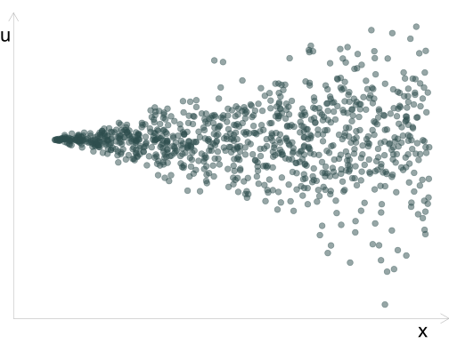

6 Гетероскедастичність
6.1 Огляд явища гетероскедастичності
Нагадаю припущення щодо побудови моделей лінійної регресії:
Наша вибірка (\(x_k\) і \(y_i\)) була сформована з генеральної сукупності випадковим чином.
\(y\) — це лінійна функція]* \(\beta_k\) та \(u_i\).
Не має чистої мультиколінеарності у вибірці.
Пояснювальні змінні є екзогенними: \(\mathop{\boldsymbol{E}}\left[ u \middle| X \right] = 0 \left(\implies \mathop{\boldsymbol{E}}\left[ u \right] = 0\right)\)
Залишки мають постійну дисперсію \(\sigma^2\) і нульову коваріація, тобто,
- \(\mathop{\boldsymbol{E}}\left[ u_i^2 \middle| X \right] = \mathop{\text{Var}} \left( u_i \middle| X \right) = \sigma^2 \implies \mathop{\text{Var}} \left( u_i \right) = \sigma^2\)
- \(\mathop{\text{Cov}} \left( u_i, \, u_j \middle| X \right) = \mathop{\boldsymbol{E}}\left[ u_i u_j \middle| X \right] = 0\) для \(i\neq j\)
- Залишки мають нормальний розподіл, тобто \(u_i \overset{\text{iid}}{\sim} \mathop{\text{N}}\left( 0, \sigma^2 \right)\) (iid, independent and identically distributed, незалежні та однаково розподілені).
У цьому розділі ми сконцентруємо свою увагу на п’ятому припущенні щодо постійності дисперсії, яка називається гомоскедастичністю.
Якщо дисперсія залишків непостійна — таке явище називається гетероскедастичснітю: \(\mathop{\text{Var}} \left( u_i \right) = \sigma^2_i\) та \(\sigma^2_i \neq \sigma^2_j\) для деяких \(i\neq j\)
Класична гетероскедастичність залишків виглядає так: дисперсія \(u\) збільшується зі збільшенням \(x\) 
Інший випадок гетероскедастичності: дисперсія \(u\) збільшується за краях \(x\)

Або так: різна дисперсія \(u\) в різних групах:

Гетероскедастичність присутня, коли дисперсія \(u\) змінюється за будь-якої комбінацієї пояснювальних змінних від \(x_1\) до \(x_k\) (далі: \(X\)).
Це дуже розповсюджене явище на практиці. Наявність цього явища в моделі негативно впливає на якість МНК моделі.
Основні наслідки гетероскедастичності:
МНК-оцінки залишаються незміщенними.
Ефективність: МНК більше не є найкращім незміщеним варіантом оцінювання моделі.
Статистичний вивід: стандартні похибки оцінок параметрів моделі є зміщенними, що в результаті призводить до хибних довірчих інтервалів та проблем з тестуванням гіпотез (\(t\) та \(F\) тести).
Рішення:
Проводити тестування на наявність гетероскедастичності.
Використовувати підходи до нівелювання наслідків гетероскедастичності.
6.2 Тестування гетероскедастичності
Ефективність наших оцінок залежить від наявності або відсутності гетероскедастичності. Для виявленя цього явища використовуються наступні підходи:
Тест Гольдфельда-Квандта
Тест Брейша-Пагана
Тест Уайта
Кожен з цих тестів зосереджується на використанні залишків МНК \(e_i\) для оцінювання порушенm в \(u_i\).
6.2.1 Тест Гольдфельда-Квандта
Тест G-Q був одним з перших тестів гетероскедастичності (1965). В кьому зосереджено увагу на конкретному типі гетероскедастичності: чи відрізняється дисперсія \(u_i\) між двома групами.
Раніше ми використовували залишки для оцінювання \(\sigma^2\):
\[ s^2 = \dfrac{\text{RSS}}{n-1} = \dfrac{\sum_i e_i^2}{n-1} \]
Ми будемо використовувати цю ж ідею, щоб визначити, чи відрізняється дисперсія в двох групах, порівнюючи \(s^2_1\) і \(s^2_2\).
Алгоритм виконання тесту G-Q:
Впорядкуємо спостереження за \(x\) (який вважаємо призводить до гетероскедастичності)
-
Розділяємо дані на дві групи розміру \(n^*\)
- \(G_1\): перша третина
- \(G_2\): остання третина
Будуємо окремі регресії \(y\) на \(x\) для G1 та G2
Запишіть \(ESS_1\) і \(ESS_2\)
Розраховуємо статистику тесту G-Q:
\[ F_{\left(n^{\star}-k,\, n^{\star}-k\right)} = \dfrac{\text{RSS}_2/(n^\star-k)}{\text{RSS}_1/(n^\star-k)} = \dfrac{\text{RSS}_2}{\text{RSS}_1} \] Голдфельд і Квандт запропонували \(n^{\star}\) із \((3/8)n\). \(k\) кількість розрахункових параметрів (тобто \(\hat{\beta}_j\)).
Статистика G-Q тесту відповідає відповідає розподілу \(F\) зі ступенями свободи \(n^{\star}-k\) і \(n^{\star}-k\).
Зауваження:
- Тест G-Q вимагає, щоб випадкова складова відповідає нормальному розподілу.
- G-Q передбачає дуже специфічний тип/форму гетероскедастичності.
- Дуже добре працює, якщо ми знаємо форму гетероскедастичності.
6.2.1.1 Візуальний приклад
- Припустимо, що ми побудували модель та отримали наступний розподіл залишків відносно впорядкованої змінної \(x\):
- Поділимо спостереження на групи:
- Розрахуємо статистику
\(F_{375,\,375} = \dfrac{\color{#e64173}{\text{SSE}_2 = 18,203.4}}{\color{#314f4f}{\text{SSE}_1 = 1,039.5}} \approx 17.5 \implies\) p-value \(< 0.001\)
В такому випадку ми відхиляємо \(H_0\): \(\sigma^2_1 = \sigma^2_2\) і робимо висновок, що є статистично значущі докази гетероскедастичності.
6.2.1.2 Недолік тесту
Але в такого підходу є недолік. Якщо наші похибки будуть симетрично змінюватись відносно центру, тест буде приймати нульову гіпотезу:
\(F_{375,\,375} = \dfrac{\color{#e64173}{\text{SSE}_2 = 14,516.8}}{\color{#314f4f}{\text{SSE}_1 = 14,937.1}} \approx 1 \implies\) p-value \(\approx 0.609\)
В такому випадку ми не можемо відхилити \(H_0\): \(\sigma^2_1 = \sigma^2_2\) при цьому гетероскедастичність присутня.
6.3 Тест Брейша-Пагана
bookdown::render_book(“index.Rmd,” output_dir = “docs”)
Що робити? Більш ефективним буде підхід за котрого ми надаємо вагу спостереження обернено пропорційно їх дисперсії \(u\).
менша вага спостереженням з високим значенням дисперсії \(u\).
більша вага спостереженням з низькими значенням дисперсії \(u\).
Це і є основна ідея зваженого методу найменших квадратів (WLS, ЗМНК)